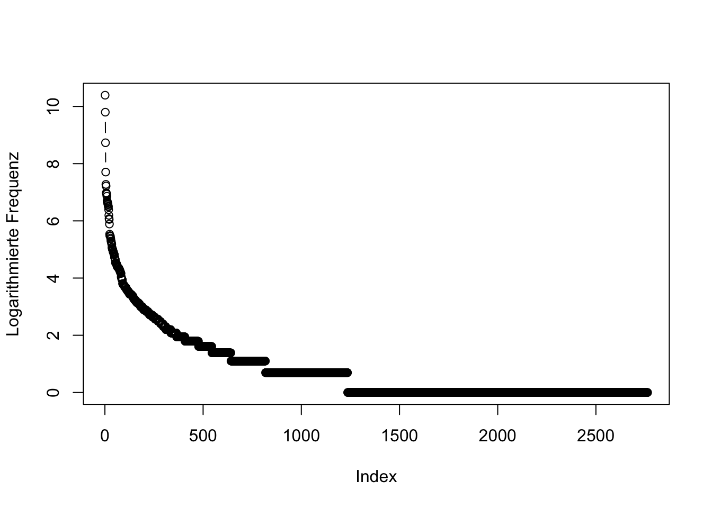

4 Morphologische Produktivität live: Ein Blick auf die Bestimmungsglieder
In diesem Abschnitt wollen wir uns nun einen anderen Weg anschauen, auf dem wir uns den Daten nähern können. Hierfür arbeiten wir mit R - falls Sie sich hier einarbeiten wollen, finden Sie online extrem viele gute Tutorials, und es gibt auch viele Einführungen in die Statistik speziell für Linguist*innen, die mit R arbeiten. Hier kann ich nicht in R einführen, versuche aber, das, was ich mache, so verständlich zu beschreiben, dass Sie zumindest das Konzept hinter dem, was ich mache, verstehen können.
Zunächst lade ich einige Zusatzpakete, die ich im Folgenden benutzen möchte. Sie enthalten Funktionen, die in R nicht standardmäßig enthalten sind. Wenn Sie die Pakete noch nicht installiert haben, müssen Sie siejedes einzelne zunächst mit install.packages("Paketname") installieren. Das gilt für diejenigen, die über das “Comprehensive R Architecture Network” (CRAN) verfügbar sind. Bei einem der Pakete, “collostructions”, ist dies nicht der Fall, Sie finden es unter www.sfla.ch.
Zunächst lesen wir die Daten ein, werfen einen Blick auf die Struktur der Daten und schauen uns diese mit Hilfe des str()-Befehls genauer an.
## Parsed with column specification:
## cols(
## Freq = col_double(),
## word = col_character(),
## date = col_date(format = "")
## )## # A tibble: 14,682 x 3
## Freq word date
## <dbl> <chr> <date>
## 1 1 Corona 2020-03-04
## 2 1 Corona* 2020-04-01
## 3 1 Corona* 2020-04-03
## 4 1 Corona* 2020-04-08
## 5 1 Corona* 2020-04-09
## 6 1 Corona* 2020-04-13
## 7 1 Corona* 2020-04-18
## 8 1 Corona* 2020-05-08
## 9 1 Corona* 2020-05-18
## 10 1 Corona* 2020-05-22
## # … with 14,672 more rows## tibble [14,682 × 3] (S3: spec_tbl_df/tbl_df/tbl/data.frame)
## $ Freq: num [1:14682] 1 1 1 1 1 1 1 1 1 1 ...
## $ word: chr [1:14682] "Corona" "Corona*" "Corona*" "Corona*" ...
## $ date: Date[1:14682], format: "2020-03-04" "2020-04-01" ...
## - attr(*, "spec")=
## .. cols(
## .. Freq = col_double(),
## .. word = col_character(),
## .. date = col_date(format = "")
## .. )Nun löschen wir alle Datenpunkte, in denen “Corona” nicht von mindestens zwei weiteren Zeichen gefolgt wird, um Fehltreffer wie jene zu tilgen, die Ihnen sicherlich ins Auge gefallen sind, als wir oben einen Blick auf die ersten paar Datenpunkte geworfen haben. Dann konvertieren wir alle Daten in Kleinschreibung und fügen eine Spalte hinzu, die nur die Zweitglieder enthält (also alles, was auf Corona- folgt). Aus dieser Spalte löschen wir zusätzlich noch alle Interpunktionszeichen, um z.B. Fälle der Kompositaschreibung mit und ohne Bindestrich zu vereinheitlichen.
# Fehltreffer reduzieren
d <- d[-which(sapply(1:nrow(d), function(i) nchar(d$word[i]))<=8),]
# Groß- und Kleinschreibung ignorieren
d$word <- tolower(d$word)
# Köpfe
d$head <- gsub("corona-?", "", d$word)
# Interpunktion löschen
d$head <- gsub("[[:punct:]]", "", d$head)Wir fassen die Daten nun mit der summarise-Funktion aus dem dplyr-Paket (Teil des “Tidyverse”) zusammen, um die Gesamtfrequenzen jedes Bestimmungsglieds zu bekommen, und ordnen die Daten absteigend nach Frequenz. Das Ganze speichern wir in einen eigene Dataframe, den wir corona_tbl nennen.
Mit Hilfe dieser Daten können wir nun sehr einfach auch die Kennzahlen errechnen, die wir auf der letzten Seite kennengelernt und mit Excel errechnet haben:
# Anzahl der Types = Anzahl der Zeilen der eben genereierten Tabelle:
types <- nrow(corona_tbl)
# Anzahl der Tokens = Summe der Frequenz aller Tokens:
tokens <- sum(corona_tbl$Freq)
# Anzahl der Hapax Legomena: Anzahl der Types mit dem Frequenzwert 1:
hapaxes <- length(which(corona_tbl$Freq==1))
# Realisierte Produktivität:
hapaxes / tokens## [1] 0.01674374## [1] 0.0302768Wir können mit R aber noch viel mehr machen. So können wir mit Hilfe von R ein sogenanntes Motion Chart erstellen. In so einem Motion Chart könnnen wir dann die Entstehung neuer Wortbildungsprodukte quasi “live” mitverfolgen. Dafür brauchen wir aber zunächst eine Tabelle, die auch die date-Werte, also die Kalenderdaten, mit einschließt, die wir aus der soeben erstellten corona_tbl-Tabelle gelöscht haben. Wir verwenden wiede die summarise-Funktion, die wir oben bereits kennengelernt haben. Der Zusatz as_tibble ist hier aus technischen Gründen nötig, weil die GoogleVis-Funktion, die wir später benutzen, den entstehenden Dataframe sonst nicht als Input akzeptiert. “Tibble” ist das Default-Dataframe-Format der Tidyverse-Pakete, und der Output der summarise-Funktion ist zwar selbst ein(e?) Tibble, aber mit zusätzlichen Attributen, derer wir uns auf diese Weise entledigen.
Es ist in vielen Fällen sinnvoll, Frequenzen zu logarithmieren (vgl. hierzu z.B. https://de.wikipedia.org/wiki/Logarithmus). Gerade bei Frequenzdaten ist es üblich, sie zu logarithmieren, da Wortfrequenzen oft einer sehr schiefen Verteilung folgen, wie wir auch an diesen Daten sehen können:

Einige wenige Tokens sind extremst häufig, viele sehr selten und die allermeisten Hapaxe, haben also eine Frequenz von 1. Anders sieht es aus, wenn wir die Daten logarithmieren:

Die Verteilung ist nun schon deutlich weniger schief. Fügen wir deshalb unserer Tabelle, die die Frequenz jedes einzelnen Bestimmungsglied für jedes einzelne Datum erfasst, noch eine Spalte mit logarithmierter Frequenz hinzu:
Nun können wir schon zur Visualisierung übergehen, da wir die relevanten Daten haben: Bestimmungsglied (head), Kalendertag (date) und (logarithmierte) Frequenz (logFreq). In unserem MotionChart wollen wir die Frequenz auf der y-Achse (also der vertikalen Achse) darstellen. Aber um die Daten im Raum anzuordnen, brauchen wir noch eine Information, wo sie sich horizontal, also auf der x-Achse, befinden sollen. Dafür fügen wir eine (bedeutunglose) Indexvariable mit randomisierten Zahlen ein. Mit Hilfe des set.seed-Befehls stelle ich im folgenden Code sicher, dass Sie “zufällig” genau das gleiche Sample erhalten werden wie ich.
set.seed(100)
# Dataframe mit Zufallszahl für jedes Lemma
spl <- tibble(
head = unique(d2$head),
index = sample(1:(length(unique(d2$head))), length(unique(d2$head)))
)
# beide Dataframes verbinden
d2 <- left_join(d2, spl, by = "head")Nun können wir uns schon an eine erste Visualisierung wagen. Weil die Daten allerdings viele Datenpunkte enthalten, die von 2019 stammen - die zum einen für uns nicht so interessant sind und bei denen zum anderen die Datierung teilweise zweifelhaft ist -, beschränken wir die Daten zunächst auf diejenigen aus dem Jahr 2020, wofür wir eine eigene “year”-Variable erstellen.
Nun können wir die Daten mit Hilfe eines MotionChart visualisieren:
bubble <- gvisMotionChart(d2, "head", "date", xvar = "index", yvar = "logFreq", sizevar = "logFreq", colorvar = "")
plot(bubble)
Fig. 4.1: GoogleVis Motion Chart mit Frequenzen der Bestimmungsglieder, die im Coronakorpus mit dem Erstglied Corona- auftreten.